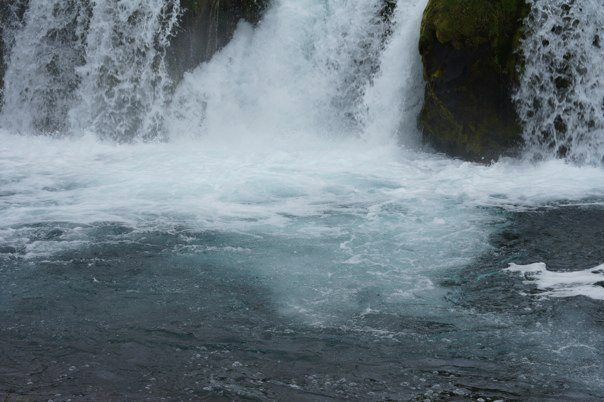
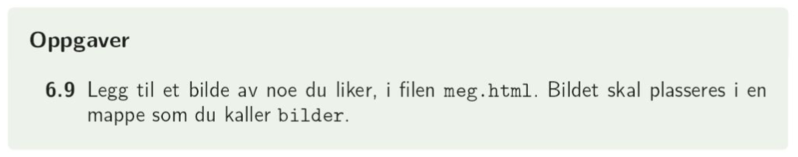
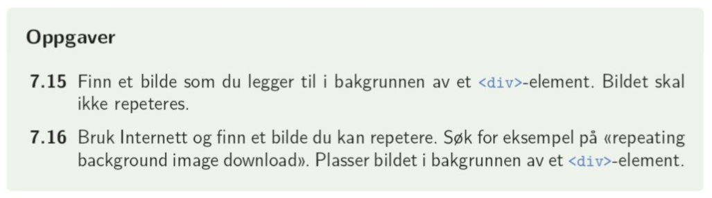

Det er to måter å legge inn bilder på: enten å kun bruke < img >-taggen, eller å bruke denne i kombinasjon med < figure >
Attributtene til img-taggen er kilde, høyde og bredde, samt en alternativ tekst dersom bildet ikke kan vises:
< img src="media/rykk.jpeg" alt="her skulle det vært et bilde" width="400px">
Bildene som legges ved kan enten ha lokal plassering: src="media/rykk.jpeg", eller vi kan bruke bilder fra eksterne nettsider: src="http://atletklubben.no/images/TAK/Nyhetsbilder/Asta%20Rnning%20Fjrli%20i%20rykk%20NM%202016_630.jpg" slik at bildet legges ut som
< img src="http://atletklubben.no/images/TAK/Nyhetsbilder/Asta%20Rnning%20Fjrli%20i%20rykk%20NM%202016_630.jpg" alt="her skulle det vært et bilde" width="400px" >
Dersom man ønsker bilder med bildetekst, f.eks. slik vi gjør det i rapporter, kan vi bruke < figure > < /figure >-taggen:
< figure >
< img src="media/rykk.jpeg" alt="her skulle det vært et bilde" idth="400px" >
< figcaption> Bilde av Asta som rykker < /figcaption >
< /figure >
Bilde av Asta som rykker
Bilder som settes inn kun som < img > er det vi kaller inline: neste element legges automatisk ved siden av, ikke på ny linje:
Jeg skriver tekst  og fortsetter med tekst
Hvorfor bruke < figure >?
Gir en "boks" rundt bildet og bildeteksten, slik at vi kan sette alle avstander felles for disse - det sparer oss for endel ekstra arbeid. Skal vi ikke ha figurtekst er det egentlig ikke vits i å bruke < figure >. En annen forskjell er at < img > er inline (neste element legges ved siden av bildet) mens < figure > er block (neste element legges under bildet).
Bakgrunnsbilder
Bakgrunnsbilder er en css-egenskap. Vi kan sette bakgrunnsbilder for en hel side (body) eller for enkeltelementer (f.eks for en tabell)
I tillegg til selve bildet kan vi bestemme størrrelse på bildet, om bildet skal repeteres dersom det av størrelse er mindre enn siden, plassering av bakgrunnen dersom den ikke repeteres og om bildet skal følge scrolling eller ikke:
body{
background-image: url('../media/lundefugl.jpg');
background-size: 50%;
background-repeat: no-repeat;
background-position: right top;
background-attachment: fixed;
color: #FFFFFF;
background-color: #444444;
}
1. I læreboka på side 58: oppgave 6.9

2. I læreboka på side 77: oppgave 7.15 og 7.16.

3. Lag en nettissde der du legger til et bilde med bildetekst (figure) og et bilde uten bildetekst (kun img).
Sida skal ha et bilde som bakgrunn, og du velger selv egenskapene til bildet.